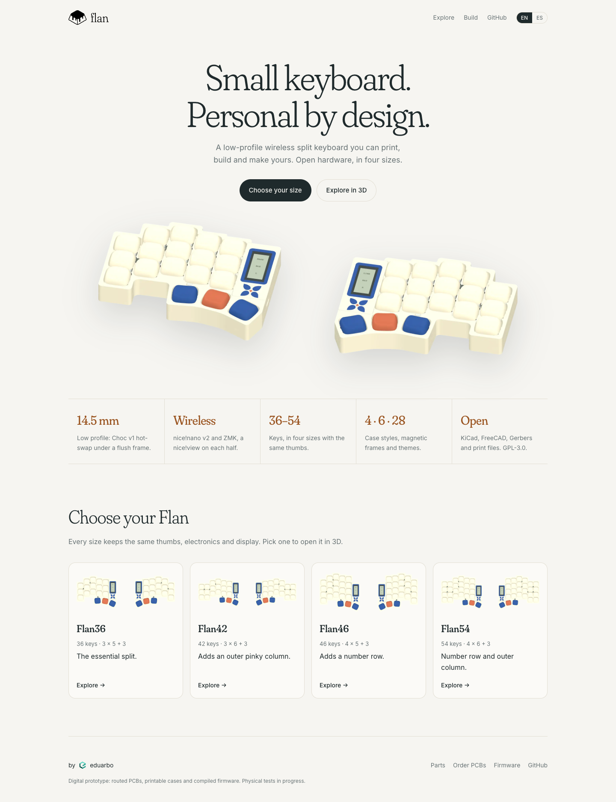
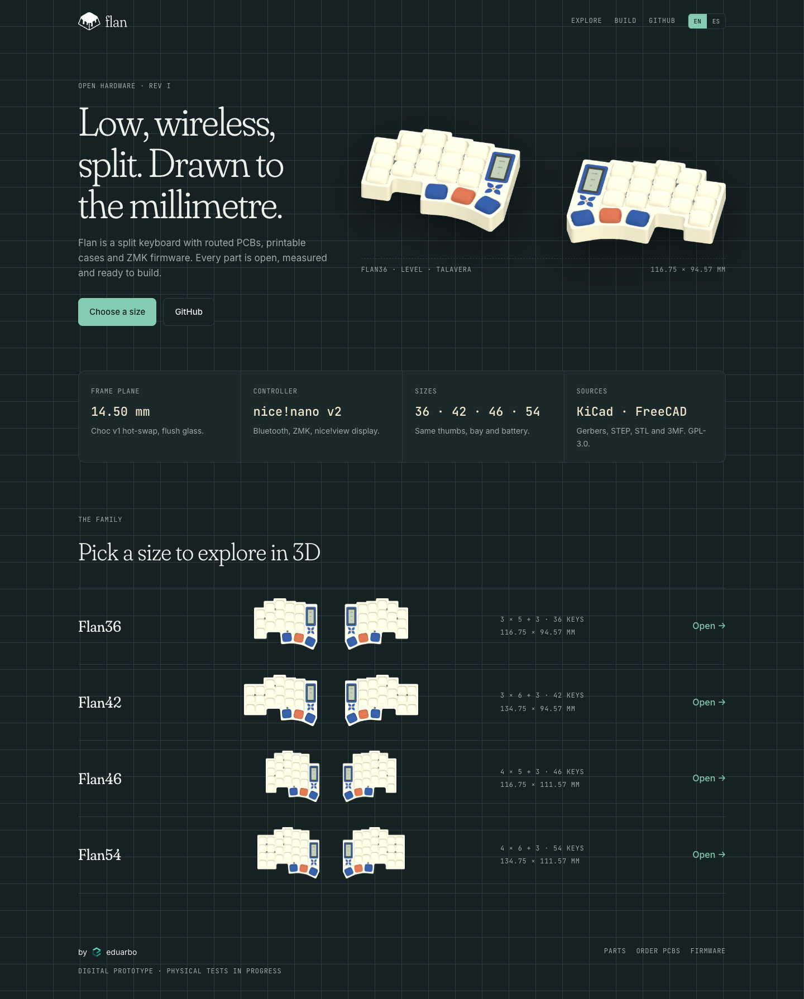
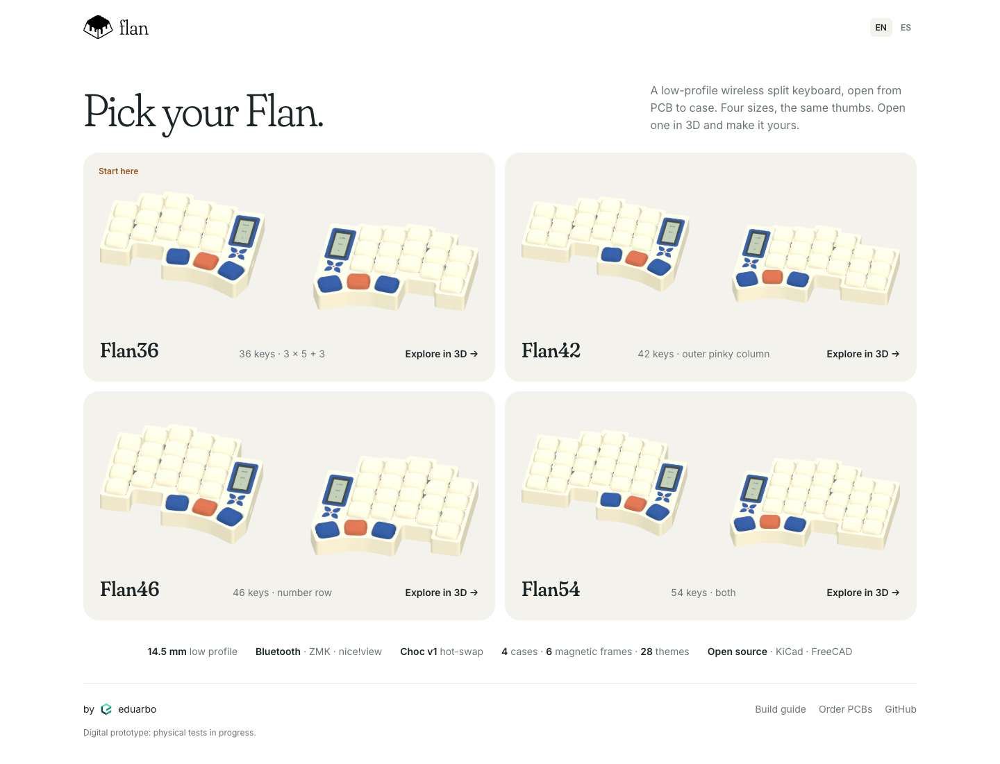

Home page · R1
Tres direcciones para la página de inicio de Flan. Todas en inglés con botón ES, logo arriba, capacidades sin ruido y un selector de tamaño que abre el visor con esa variante. Las imágenes son renders reales del visor.







Al elegir una
- El home pasa a la raíz del sitio y el visor a
/explore/. Elegir un tamaño abre/explore/#flan42, ya con esa variante cargada, y los enlaces actuales al visor se redirigen. - El visor muestra el logo de Flan en su barra, con enlace al home.
- Cambiar de tamaño se vuelve rápido: las mallas de cada variante se preparan al construir el sitio, no en tu navegador, y la variante del enlace se carga mientras abre el visor.
- En el visor, el selector de tamaño queda visible fuera de la pestaña Case.